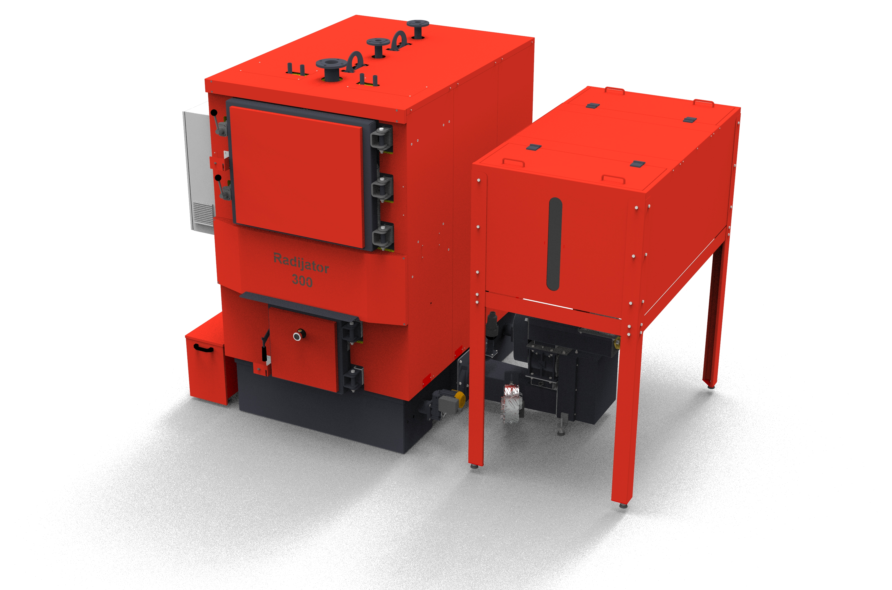
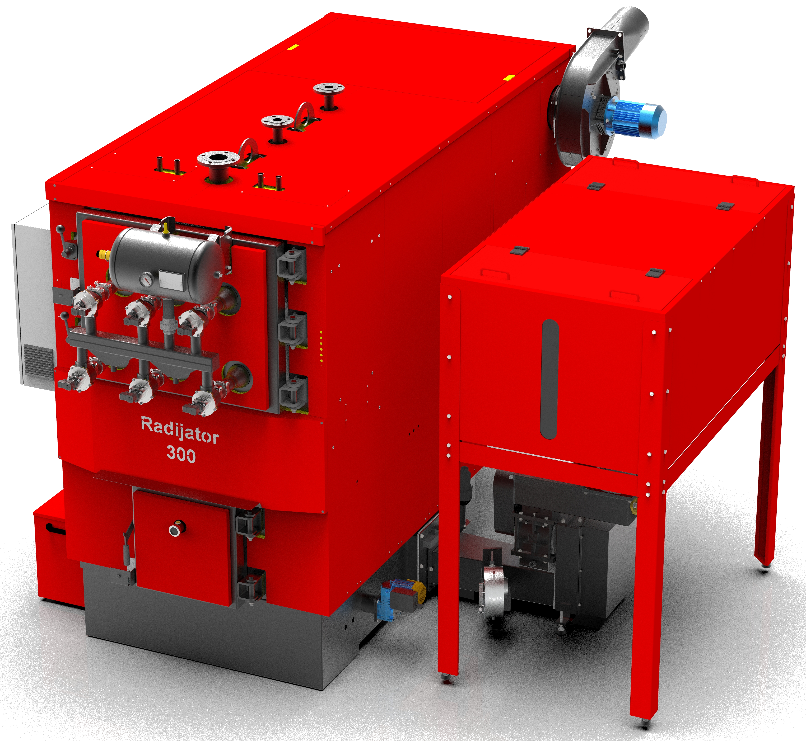
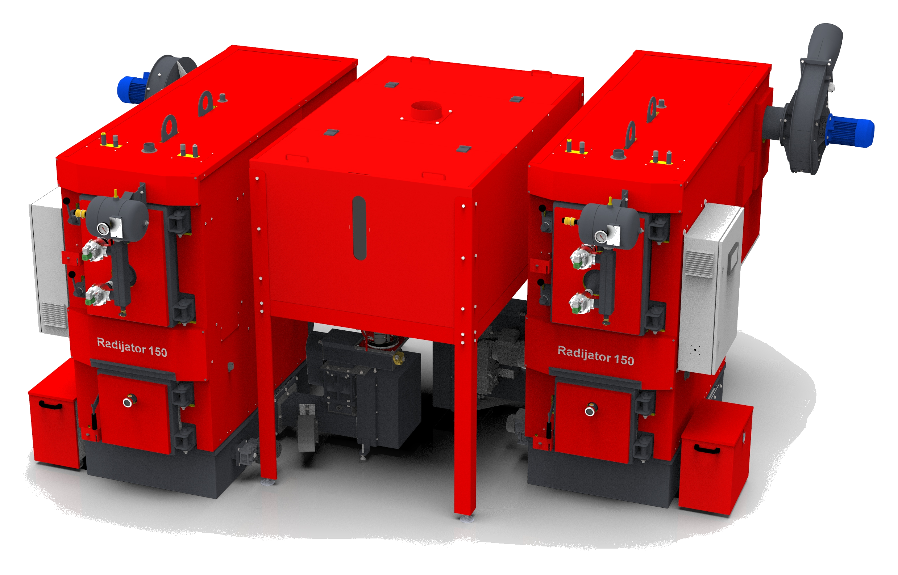
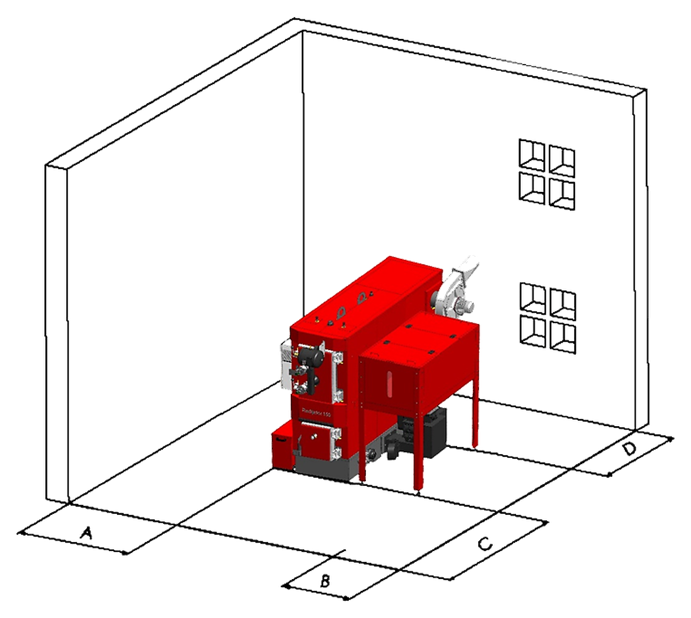

За нас
Radijator Inženjering d.o.o. е правен наследник на занаятчийската работилница „Radijator“, основана през 1991 г., чиято основна дейност е била монтаж и поддръжка на централно отопление. Първият водогреен котел на твърдо гориво произведохме през 1985 г.
Предприятието в днешната си форма съществува от 2002 г. и от година на година напредва с големи стъпки, като винаги се стреми да бъде сред първите в прилагането на нови технологии, качеството на продуктите и завладяването на нови европейски пазари.
С разширяването и усъвършенстването на производството достигнахме ниво, при което котлите се изработват с най-съвременни световни технологии. В областта на рязането на ламарина се открояват лазерно рязане, CNC плазмен процес и CNC щанцоване. Заваряването се извършва роботизирано, както и с автоматизирани машини. Най-добрият показател за качеството на продуктите и услугите е фактът, че производството се увеличава всяка година.
Днес Radijator Inženjering има над 350 служители, от които 40 са дипломирани машинни инженери, които ежедневно работят за усъвършенстване на качеството на продуктите.
Постоянното качество както на продуктите, така и на дейността на фирмата е потвърдено с получаването на сертификат за система за качество ISO 9001:2008.
Radijator Inženjering е местен производител на котли на биомаса с дългогодишна традиция, разпознаваем с надеждни и технологично напреднали решения за отопление. Чрез развитие на собствени производствени процеси и прилагане на съвременни технологии създаваме продукти, които отговарят на най-високите пазарни изисквания за качество, ефективност и дълъг експлоатационен живот.
Нашето производство обхваща котли с мощност от 6 до 600 kW, предназначени за отопление на семейни къщи, жилищни и търговски обекти, обществени институции и индустриални инсталации. Благодарение на широкия асортимент и възможността за изработка на каскадни системи можем да предложим оптимално решение за всеки обект и всяка нужда.
Качеството на нашите продукти е резултат от внимателно подбрани материали, прецизно производство и строг контрол на качеството във всички фази на процеса. Всеки котел е разработен с цел да осигури максимална енергийна ефективност, надеждна работа и дългосрочна експлоатация с минимални разходи за поддръжка.
Обръщаме специално внимание на иновациите и усъвършенстването на производствените технологии, за да осигурим на потребителите съвременни решения, които съчетават висока степен на автоматизация, лесно управление и максимално оползотворяване на енергията.
Всички наши продукти са проектирани и произведени в съответствие с действащите европейски стандарти и разпоредби в областта на котлите, което потвърждава тяхната безопасност, надеждност и високо качество.
Избирайки котлите Radijator Inženjering, избирате местен продукт, доказано качество и партньор, който със своя опит, професионална поддръжка и цялостни системни решения осигурява сигурност през целия жизнен цикъл на отоплителната система.
Компания с 35 години опит в проектирането, производството и иновациите в областта на котлите, които отопляват хиляди обекти в цяла Европа!
Технология и качество
Производство по съвременни европейски стандарти


С разширяването и усъвършенстването на производството котлите започнаха да се изработват с най-съвременни технологии: лазерно рязане, CNC плазмен процес, CNC щанцоване, роботизирано заваряване и автоматизирано заваряване.
Днес Radijator Inženjering има над 350 служители, сред които 40 дипломирани машинни инженери, които ежедневно работят за подобряване на качеството на продуктите.
ПРОИЗВОДСТВЕНА ПРОГРАМА - ИНДУСТРИЯ

Серия TKAN
Индустриалните котли на биомаса са изработени от котелна ламарина с дебелина 6 mm и повече. Топлообменникът е от безшевни котелни тръби. КПД при работа с пелети е над 90%. Температурата на димните газове на изхода е от 170 до 190 градуса при по-високи режими и винаги може да се провери на дисплея на автоматиката. Предлагат се в мощностен диапазон 60-300 kW.

Серия TKAN Integra
Индустриалният котел на биомаса представлява усъвършенствана версия на стандартния котел TKAN. Оборудван е със зидана горивна камера, по-усъвършенствана автоматика и по-богато съпътстващо оборудване, с което се постигат по-висока надеждност, по-добра ефективност на горенето и по-широки възможности за приложение. Изработен е от котелна ламарина с дебелина 6 mm и повече, с топлообменник от безшевни котелни тръби. КПД е над 90%, а мощностният диапазон е 80-600 kW.

Каскадни системи
Каскадните системи представляват комбинация от два или повече котела, свързани в единна система с общ силоз за съхранение на пелети. Такава конфигурация осигурява по-голяма обща инсталирана мощност, по-надеждна работа, равномерно разпределение на натоварването и по-висока енергийна ефективност на системата.

Допълнително оборудване
Освен котлите, в предложението влиза и пълно съпътстващо оборудване за изграждане на функционална отоплителна система. Асортиментът включва силози за съхранение на пелети, шнекови транспортьори, елеватори, буферни съдове, автоматика и друго оборудване, необходимо за надежден транспорт, дозиране и контрол на пелетите, както и за безопасна и ефективна работа на цялата система.
ВОДОГРЕЕН КОТЕЛ НА ПЕЛЕТИ С АВТОМАТИЧНО ПОДАВАНЕ TKAN
(Предлага се в мощностен диапазон 60 - 300 [kW]) Котелът TKAN е разработен с цел RADIJATOR INŽENJERING да предложи на пазара котел, чиито механични и термични характеристики са специално пригодени за биомаса като гориво. От друга страна, изискванията на пазара са насочени към възможно най-голяма универсалност на горивото, поради което TKAN може да се захранва и с дърва, като тогава зареждането е ръчно.
По външен дизайн, размери на горивната камера и отвори за зареждане и почистване TKAN е запазил всички добри качества на предишните модели, с които RADIJATOR INŽENJERING е разпознаваем на пазара. Водната част на котела и начинът на топлообмен между димните газове и водата чрез тръбен топлообменник са пригодени за биомаса. Поради използването на вентилатор, тоест принудителна тяга, пътят на димните газове е по-дълъг отколкото при стандартните котли. По същите причини е възможно използване на насочващи елементи за димните газове, т.нар. турбулатори, които допълнително повишават КПД на котела. Турбулаторите са спирали, изработени от специален материал.
КПД при работа с пелети е над 90%. При нормални режими температурата на димните газове на изхода е около 160 °C, а при максимални режими е под 180 °C. Тези стойности могат по всяко време да се отчетат на дисплея.
Всички части на водната част на котела са изработени от безшевни тръби с качество ST 35.4 и котелна ламарина с дебелина 5 mm и повече, в зависимост от мощността на котела. Ламарините са с качество 1.0425 по стандарт EU, съответно P265GH по стандарт EUII. Горивната камера работи на принципа на т.нар. възходящо горене, при което горивото от зоната на транспорта се движи вертикално нагоре към зоната на горене. Изработена е от масивни изолационни материали и сив чугун. Транспортът на горивото се осигурява чрез шнекови транспортьори.
Таблица 1. Налични мощности
| ТИП КОТЕЛ | ТИП КОТЕЛ | ТИП КОТЕЛ | TKAN 60 | TKAN 80 | TKAN 100 | TKAN 150 | TKAN 200/250/300 |
|---|---|---|---|---|---|---|---|
| Мерна ед. | |||||||
| Мощност | Мощност | kW | 60 | 80 | 100 | 150 | 200/250/300 |
| Работно налягане | Работно налягане | kPa | 300 | 300 | 300 | 300 | 300 |
| Пробно налягане | Пробно налягане | kPa | 450 | 450 | 450 | 450 | 450 |
| Обем вода в котела | Обем вода в котела | L-cca | 276 | 368 | 460 | 690 | 920/1150/1380 |
| Маса на котела | Маса на котела | kg | 655 | 915 | 1073 | 1665 | 2260/2800/3080 |
| Маса на силоза | Маса на силоза | kg | 106 | 100 | 110 | 162 | 180/220/220 |
| As | mm | 610 | 610 | 810 | 1010 | 1394 | |
| Размери | B | mm | 1020 | 1020 | 1176 | 1456 | 1830 |
| Размери | Hs | mm | 1740 | 1736 | 1611 | 1875 | 1822/1822/2070 |
| V | lit. | 290 | 305 | 680 | 1600/2330/3115 | ||
| Количество пелети в силоза | Количество пелети в силоза | kg | 180 | 190 | 410 | 1000/1500/2000 |


РАЗРЕЗ НА КОТЕЛ TKAN

- Турбулатори
- Тръбен топлообменник
- Врата за почистване на тръбния топлообменник и самия котел
- Разпределително табло с автоматика
- Контейнер за пепел
- Врата за зареждане и разпалване
- Шнек за автоматично извеждане на пепелта от горивната камера
- Горивна камера на котела
- Лети сегменти
- Мотор за задвижване на шнека за автоматично почистване на горивната камера
- Долна ос на шнековия транспортьор
- Клетъчен дозатор (valvola)
- Горна ос на шнековия транспортьор
- Топлообменник за термична защита
ТАБЛИЦА С РАЗМЕРИ НА КОТЕЛ TKAN

| РАЗМЕРИ | РАЗМЕРИ | РАЗМЕРИ | TKAN 60 | TKAN 80 | TKAN 100 | TKAN 150 | TKAN 200 | TKAN 250 | TKAN 300 | |
|---|---|---|---|---|---|---|---|---|---|---|
| A | mm | mm | 680 | 730 | 730 | 850 | 1005 | 1260 | 1260 | |
| A1 | mm | mm | 1355 | 1788 | 2080 | 2395 | 2945 | 3456 | 3455 | |
| As | mm | mm | 610 | 610 | 810 | 1010 | 1394 | 1394 | 1394 | |
| B | mm | mm | 1020 | 1020 | 1176 - 1286 | 1456 | 1830 | 1830 | 1830 | |
| B1 | mm | mm | 1518 | 1565 | 1727 | 2070 | 2121 | 2546 | 2546 | |
| C | mm | mm | 1125 | 1573 | 1573 | 1681 | 2044 | 2114 | 2114 | |
| ØD | mm | mm | 200 | 200 | 200 | 250 | 250 | 300 | 300 | |
| E | mm | mm | 675 | 417 | 417 | 785 | 675 | 707 | 707 | |
| G | mm | mm | 360 | 389 | 389 | 360 | 465 | 467 | 467 | |
| H | mm | mm | 1564 | 1960 | 1960 | 2151 | 2547 | 2663 | 2663 | |
| Hs | col | col | 1740 | 1736 | 1611 | 1875 | 1822 | 1822 | 2070 | |
| D1 | col | col | 6/4" | 2" | 2" | 2" | DN80 NP6 | DN80 NP6 | DN80 NP6 | |
| D2 | col | col | 6/4" | 2" | 2" | 2" | DN80 NP6 | DN80 NP6 | DN80 NP6 | |
| D3 | col | col | 1/2" | 1/2" | 1/2" | 1/2" | 1" | 1" | 1" | |
| D4 | col | col | 3/4" | 3/4" | 3/4" | 3/4" | DN40 NP16 | DN40 NP16 | DN40 NP16 | |
| D5 | col | col | 1/2" | 1/2" | 1/2" | 1/2" | 1/2" | 1/2" | 1/2" | |
| D6 | col | col | 1/2" | 1/2" | 1/2" | 1/2" | 1/2" | 1/2" | 1/2" | |
ТАБЛИЦА С РАЗМЕРИ НА СИЛОЗ TKAN

| РАЗМЕРИ | РАЗМЕРИ | РАЗМЕРИ | РАЗМЕРИ | РАЗМЕРИ | |
|---|---|---|---|---|---|
| A | B | H | V | Количество пелети в силоза | |
| mm | mm | mm | lit. | kg | |
| TKAN 80 | 606 | 1020 | 1736 | 290 | 180 |
| TKAN 100 | 810 | 1176 | 1611 | 305 | 190 |
| TKAN 150 | 1010 | 1456 | 1875 | 680 | 410 |
| TKAN 200/250/300 | 1394 | 1830 | 1828 | 1600 | 1000 |
| TKAN 200/250/300 | 1394 | 1830 | 2138 | 2330 | 1500 |
| TKAN 200/250/300 | 1394 | 1830 | 2448 | 3115 | 2000 |
ВОДОГРЕЕН КОТЕЛ НА ПЕЛЕТИ С АВТОМАТИЧНО ПОДАВАНЕ, ОБЕЗПРАШАВАНЕ И ЦИКЛОН - TKAN INTEGRA
(Предлага се в мощностен диапазон 80 - 600 [kW])
TKAN INTEGRA представлява ново поколение индустриални котли на биомаса, разработено като усъвършенстване на стандартния модел TKAN. Създаден е като отговор на пазарните изисквания за по-висока степен на автоматизация, по-висока енергийна ефективност и по-голяма надеждност при работа, като запазва всички доказани конструктивни решения, с които RADIJATOR INŽENJERING е разпознаваем.
Благодарение на зиданата горивна камера, усъвършенстваната система за горене, съвременната автоматика и по-богатото стандартно оборудване, TKAN INTEGRA осигурява стабилна работа, максимално оползотворяване на енергията и дълъг експлоатационен живот на всички ключови компоненти. Конструкцията на котела е изработена от висококачествени котелни ламарини с дебелина 6 mm и повече, а тръбният топлообменник е от безшевни котелни тръби, което осигурява висока механична якост, надеждност и дълготрайност на системата.
Зиданата горивна камера е едно от ключовите предимства на модела TKAN INTEGRA. Тази конструкция позволява пълно и стабилно изгаряне на горивото, минимални емисии на вредни газове и прахови частици, както и максимално оползотворяване на енергията в пелетите. Едновременно с това стоманените части на котела не са директно изложени на пламъка, което значително удължава експлоатационния живот на котела.
За намаляване на количеството частици, които отиват към комина, е предвиден циклон, а при по-големи конфигурации - мултициклон с центробежен вентилатор. Производителят особено препоръчва циклон, когато се използва пневматично почистване на топлообменника, тъй като тогава допълнително се извеждат пепел и сажди от котела. При по-големите модели TKAN Integra се използва мултициклон с центробежен вентилатор. По-точно, при моделите TKAN 80 Integra и TKAN 100 Integra вентилаторът е монтиран на димохода, а при моделите TKAN 150 Integra, TKAN 200 Integra, TKAN 250 Integra и TKAN 300 Integra е конструиран мултициклон с центробежен вентилатор.
При отделни конфигурации TKAN се използва вентилатор от страната на димоотвода, а при по-големи системи мултициклонът може да бъде оборудван с центробежен вентилатор. Това е важно при проектирането на цялата коминна система, особено ако има:
няколко котела, по-дълъг димоотвод, циклон/мултициклон, по-голям брой колена, общ комин.
Котлите от серия TKAN INTEGRA стандартно са оборудвани със система за автоматично почистване на пространството около горивната камера, а тръбният топлообменник се почиства автоматично със сгъстен въздух. Чрез периодични въздушни импулси системата премахва наслояванията от сажди в димогарните тръби, поддържа висок КПД на котела и значително намалява нуждата от ръчна поддръжка.

| ТИП КОТЕЛ | ТИП КОТЕЛ | ТИП КОТЕЛ | TKAN 80 Integra | TKAN 100 Integra | TKAN 150 Integra | TKAN 200/250/300 Integra |
|---|---|---|---|---|---|---|
| Мерна ед. | ||||||
| Мощност | Мощност | kW | 80 | 100 | 150 | 200/250/300 |
| Работно налягане | Работно налягане | kPa | 300 | 300 | 300 | 300 |
| Пробно налягане | Пробно налягане | kPa | 450 | 450 | 450 | 450 |
| Обем вода в котела | Обем вода в котела | L-cca | 368 | 460 | 690 | 920/1150/1380 |
| Маса на котела | Маса на котела | kg | 1191 | 1415 | 2288 | 3240/5293/5605 |
| Маса на силоза | Маса на силоза | kg | 100 | 165 | 165 | 225 |
| As | mm | 606 | 1006 | 1006 | 1394 | |
| Размери | B | mm | 1020 | 1456 | 1456 | 1830 |
| Размери | Hs | mm | 1736 | 1872 | 1872 | 1822 |
| V | lit. | 290 | 680 | 680 | 1600/2330/3115 | |
| Количество пелети в силоза | Количество пелети в силоза | kg | 180 | 410 | 410 | 1000/1500/2000 |


РАЗРЕЗ НА КОТЕЛ TKAN INTEGRA

- Турбулатори
- Тръбен топлообменник
- Врата за почистване на тръбния топлообменник и самия котел
- Разпределително табло с автоматика
- Бутилка за сгъстен въздух
- Импулсен електромагнитен вентил
- Врата за зареждане и разпалване
- Контейнер за пепел
- Облицовка на горивната камера
- Шнек за автоматично извеждане на пепелта от горивната камера
- Мотор за задвижване на шнека за автоматично почистване на горивната камера
- Лети сегменти
- Горивна камера на котела
- Долна ос на шнековия транспортьор
- Клетъчен дозатор (valvola)
- Горна ос на шнековия транспортьор
- Центробежен вентилатор на мултициклона
- Мултициклон
- Топлообменник за термична защита

| РАЗМЕРИ | РАЗМЕРИ | TKAN 80 Integra | TKAN 100 Integra | TKAN 150 Integra | TKAN 200 Integra | TKAN 250 Integra | TKAN 300 Integra | |
|---|---|---|---|---|---|---|---|---|
| A | mm | 730 | 730 | 850 | 1005 | 1380 | 1380 | |
| A1 | mm | 1788 | 2276 | 2394 | 2942 | 3200 | 3200 | |
| As | mm | 606 | 1006 | 1006 | 1394 | 1394 | 1394 | |
| B | mm | 1020 | 1456 | 1456 | 1830 | 1830 | 1830 | |
| B1 | mm | 1655 | 1817 | 3099 | 3386 | 3755 | 3755 | |
| B2 | mm | 1595 | 1767 | 2729 | 2988 | 3360 | 3360 | |
| C | mm | 1507 | 1507 | 2080 | 2515 | 2312 | 2312 | |
| ØD | mm | 180 | 200 | 190 | 190 | 190 | 190 | |
| E | mm | 390 | 390 | 359 | 465 | 467 | 467 | |
| G | mm | 417 | 417 | 784 | 675 | 707 | 707 | |
| H | mm | 1960 | 1960 | 2151 | 2547 | 2413 | 2413 | |
| Hs | col | 1736 | 1872 | 1872 | 1822 | 1822 | 1822 | |
| D1 | col | 2" | 2" | 2" | DN80 NP6 | DN80 NP6 | DN80 NP6 | |
| D2 | col | 2" | 2" | 2" | DN80 NP6 | DN80 NP6 | DN80 NP6 | |
| D3 | col | 1/2" | 1/2" | 1/2" | DN40 NP16 | DN40 NP16 | DN40 NP16 | |
| D4 | col | 3/4" | 3/4" | 3/4" | DN40 NP16 | DN40 NP16 | DN40 NP16 | |
| D5 | col | 1/2" | 1/2" | 1/2" | 1" | 1" | 1" | |
| D6 | col | 1/2" | 1/2" | 1/2" | 1/2" | 1/2" | 1/2" | |
| Maseni protok (kg/h) | Maseni protok (kg/h) | 313 | 468 | 878 | 1116 | 1353 | 1461 |
ТАБЛИЦА С РАЗМЕРИ НА СИЛОЗ TKAN INTEGRA

| РАЗМЕРИ | РАЗМЕРИ | РАЗМЕРИ | РАЗМЕРИ | РАЗМЕРИ | |
|---|---|---|---|---|---|
| A | B | H | V | Количество пелети в силоза | |
| mm | mm | mm | lit. | kg | |
| TKAN 80 Integra | 606 | 1020 | 1736 | 290 | 180 |
| TKAN 100 Integra | 1006 | 1456 | 1872 | 680 | 410 |
| TKAN 150 Integra | 1006 | 1456 | 1872 | 680 | 410 |
| TKAN 200/250/300 Integra | 1394 | 1830 | 1828 | 1600 | 1000 |
| TKAN 200/250/300 Integra | 1394 | 1830 | 2138 | 2330 | 1500 |
| TKAN 200/250/300 Integra | 1394 | 1830 | 2448 | 3115 | 2000 |
РАЗПОЛОЖЕНИЕ НА КОТЛИТЕ TKAN И TKAN INTEGRA В КОТЕЛНОТО ПОМЕЩЕНИЕ

Позициониране на котела в котелното помещение
| РАЗМЕРИ | РАЗМЕРИ | РАЗМЕРИ | РАЗМЕРИ | |
|---|---|---|---|---|
| Тип котел | A (mm) | B (mm) | C (mm) | D (mm) |
| TKAN 60 | 100 | 400 | 1000 | 800 |
| TKAN 80 | 500 | 400 | 1000 | 800 |
| TKAN 100 | 500 | 400 | 1000 | 800 |
| TKAN 150 | 500 | 550 | 1000 | 1000 |
| TKAN 200 | 600 | 650 | 1000 | 1000 |
| TKAN 250 | 600 | 900 | 1000 | 1100 |
| TKAN 300 | 600 | 900 | 1000 | 1100 |
| TKAN 80 Integra | 500 | 400 | 1000 | 800 |
| TKAN 100 Integra | 500 | 400 | 1000 | 800 |
| TKAN 150 Integra | 500 | 550 | 1000 | 1000 |
| TKAN 200 Integra | 600 | 650 | 1000 | 1000 |
| TKAN 250 Integra | 600 | 900 | 1000 | 1100 |
| TKAN 300 Integra | 600 | 900 | 1000 | 1100 |
Котелното помещение трябва да бъде защитено от замръзване. Основата за котела трябва да бъде от негорим материал. Препоръчителните разстояния от всички четири страни на котела до стените на котелното помещение или до други твърди тела (акумулиращ бойлер и др.) са показани в таблицата и изображението по-долу.
КАСКАДНИ СИСТЕМИ
Компанията Radijator Inženjering разработи серията котли TKAN преди всичко за изгаряне на биомаса (пелети, костилки от плодове) и дърва. Когато тези котли се свържат в каскадни системи, се получава изключително мощно и гъвкаво решение за отопление на големи обекти.
Приложение на котли TKAN в каскада
- За каскадни системи най-често се използват индустриални модели с по-голяма мощност, като TKAN 100, 150, 200, 250 и 300 kW.
- Покриване на големи мощности: чрез свързване например на два котела TKAN 300 в каскада се получава система с обща мощност 600 kW, която може да отоплява хотели, производствени халета или жилищни комплекси.
- Модулност и гъвкавост: в преходните периоди (есен/пролет) работи само един котел TKAN в оптимален режим, а вторият се включва едва когато външната температура значително спадне.
Особености на каскадните системи TKAN
Модулност и гъвкавост: в преходните периоди (есен/пролет) работи само един котел TKAN в оптимален режим, а вторият се включва едва когато външната температура значително спадне.
Управление и автоматика: котлите TKAN разполагат с усъвършенствана електроника, която чрез външни каскадни регулатори позволява синхронизирана работа. Автоматиката следи температурата в хидравличния разделител и управлява кой котел да стартира.
Непрекъснато снабдяване с гориво: индустриалните котли TKAN се доставят с дневни силози (например 800 литра), които чрез допълнителни шнекови транспортьори могат да се свържат с един голям централен силоз за пелети, захранващ цялата каскада.
Сигурност и непрекъснатост: ако на един котел е необходимо почистване на пепелта или редовно сервизиране, хидравличната система и каскадната автоматика позволяват на другия котел да продължи работа без прекъсване, така че обектът никога да не остава без отопление.
ДОПЪЛНИТЕЛНО ОБОРУДВАНЕ
За надеждна и ефективна работа на индустриалните котелни инсталации системата може да бъде оборудвана с допълнителни компоненти, съобразени с нуждите на обекта и начина на използване.
Допълнителното оборудване включва системи за автоматично дозиране и транспорт на гориво, съхранение на пелети, автоматизирано регулиране на работата, както и оборудване за свързване и каскадно управление на котлите.
Решенията се проектират според капацитета на котелното помещение, необходимата автономност на работа и наличното пространство, с цел постигане на висока степен на автоматизация, надеждност и оптимален разход на гориво.
- В горивната част, за автоматично извеждане на пепелта, се монтират две шнекови спирали със собствени електрозадвижвания. Те отвеждат пепелта в две кутии, които периодично трябва да се изпразват.
- На вратата на тръбния топлообменен блок се монтира система от електромагнитни вентили, които периодично изпускат въздух под налягане и така почистват тръбите на котела от пепел и сажди. Необходим е източник на сгъстен въздух с определен капацитет, както и автоматика, която управлява този процес.
- За намаляване на емисиите на пепелни частици във въздуха се препоръчва монтаж на циклон, особено ако клиентът е инсталирал и система за пневматично почистване.
- При големи системи, където дневният разход на пелети достига от няколкостотин килограма до няколко тона, се препоръчва голям силоз с кофичков елеватор. Той се свързва с малкия силоз чрез шнекови транспортьори, а подаването се автоматизира със сонди в малкия силоз.


ПО-ГОЛЯМ ДНЕВЕН СИЛОЗ
Стандартните котли TKAN са оборудвани с дневен силоз, а за по-големи системи производителят позволява изработка на по-големи външни силози със специални размери. В зависимост от нуждите на системата могат да се изработят силози с капацитет няколко десетки тона с кофичков елеватор.
Големият външен силоз се свързва с дневния силоз на котела чрез шнекови транспортьори, което позволява автоматично допълване на дневния силоз чрез сонди за минимум и максимум. За съхранение на по-големи количества пелети могат да се използват и Jumbo торби.
При по-новите модели TKAN 60-300 стандартният дневен силоз е с обем 800 литра, с възможност за свързване с голям външен силоз. Свързването може да бъде странично или челно, в зависимост от разположението на оборудването и пространствените условия. Схемата е:
голям централен силоз -> шнеков транспортьор -> дневен силоз TKAN -> шнек до горивната камера


АВТОМАТИЧЕН ТРАНСПОРТ НА ПЕЛЕТИ
Производителят предвижда: шнекови транспортьори, задвижвания/мотори на шнековите транспортьори, свързване на големия и дневния силоз, автоматично допълване на дневния силоз, сонди за минимум и максимум в дневния силоз.
При големи системи се препоръчва голям силоз с кофичков елеватор, шнекови транспортьори и автоматично допълване на дневния силоз чрез сонди за минимум и максимум. За съхранение на по-големи количества пелети могат да се използват и Jumbo торби.
Автоматиката на котела може да управлява мотора на шнека за подаване от големия силоз.
За каскада от няколко котела TKAN това е особено полезно, защото може да се проектира централна система за разпределение на пелетите.
При автоматично пълнене на дневния силоз се използват сонди за минимум и максимум. Принципът е: MIN -> включва транспорта на пелети MAX -> спира транспорта на пелети По този начин котелът сам заявява гориво от централния склад и не изисква ръчно допълване.